Replaying a Persistent Message from the Log
Audience level
Beginner; some knowledge of MQ or z/OS
Skill set
MQ Administration, z/OS systems programming
Background
Recovery logs are a critical part of IBM MQ for z/OS resiliency. Administrators can use the supplied utilities CSQ1LOGP and CSQ4LOGS to analyze relevant parts of the MQ log and, in some situations, replay logged activity.
This lab demonstrates how to replay a persistent message from the queue manager log. It uses CSQUTIL to create queues, OEMPUT to put a single persistent message, MQ Explorer to inspect the message, OEMPUT again to get the message from the queue, CSQ1LOGP to extract the relevant log records based on the page set, and CSQ4LOGS to replay the message. It also uses the same utility to produce a summary of activity.
Overview of the exercise
In this lab, you will:
- Define the queues used by the exercise
- Put a persistent message to the queue
- Browse the message in MQ Explorer and inspect its message ID
- Get the message from the queue
- Identify the page set and active log used when the message was written
- Extract the relevant log records with
CSQ1LOGP - Replay the message with
CSQ4LOGS - Verify that the message is restored to the queue
Prerequisites
Before you begin, make sure you have the following:
- Your assigned team ID, for example
TEAM20 - The correct LPAR name from your workshop worksheet
- The correct queue manager name from your workshop worksheet
- Access to the
TEAMXX.MQPERF.LOG.JCLPDS for your team - Authority to submit jobs and review output in SDSF
- MQ Explorer access to the target queue manager
- The MQ high-level qualifier used in your environment
- The storage class or team storage value required by the JCL
- Permission to browse queue manager logs and JES output
Note: This lab is workshop-specific. Values such as
TEAMXX, queue manager names, LPAR names,MQHLQ, and storage class values must be replaced with the ones assigned to your environment.Note: This exercise is based on a persistent message. Nonpersistent messages are not handled the same way for recovery purposes, so make sure the put step uses persistence.
Lab steps
I. Define the queues for the lab
- In the
TEAMXX.MQPERF.LOG.JCLPDS, whereTEAMXXis your assigned team ID, select theDEFQLOGmember. This job defines the queues that are used later in the lab.
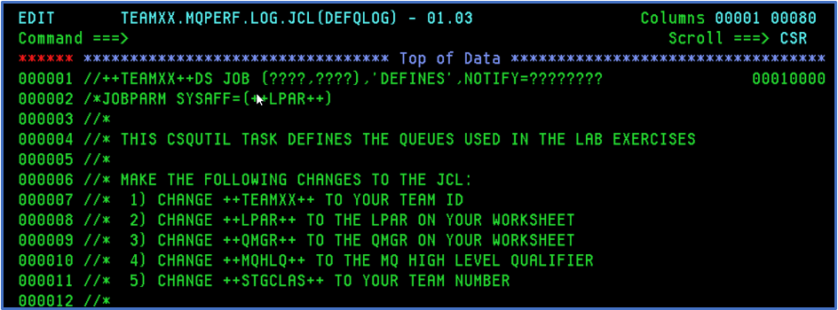
- Use a global change command to replace the
++...++variables as described in the JCL comments:
CHANGE ++TEAMXX++ TO YOUR TEAM ID
CHANGE ++LPAR++ TO THE LPAR ON YOUR WORKSHEET
CHANGE ++QMGR++ TO THE QMGR ON YOUR WORKSHEET
CHANGE ++MQHLQ++ TO THE MQ HIGH LEVEL QUALIFIER
CHANGE ++STGCLAS++ TO YOUR TEAM NUMBER
Note: The
MQHLQvalue shown in the original lab isMQ910, but that is environment-specific and may not be current in your lab environment.
- After the changes, the statements should look similar to the following example:
CHANGE TEAM20 TO YOUR TEAM ID
CHANGE MPX2 TO THE LPAR ON YOUR WORKSHEET
CHANGE QML2 TO THE QMGR ON YOUR WORKSHEET
CHANGE MQ910 TO THE MQ HIGH LEVEL QUALIFIER
CHANGE 20 TO YOUR TEAM NUMBER
-
Save and submit the job.
-
Navigate to
SDSF.STto review the results. -
Select the job and use the question mark to display the list of output files.
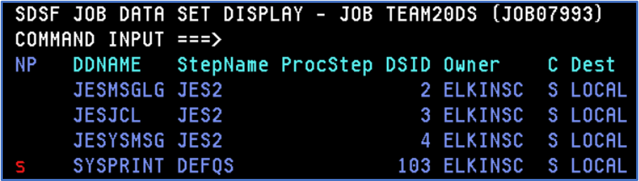
- Open the relevant output. Confirm that the queues were actually created successfully. This is important because, in some cases, the job can end with return code zero even though the queue definitions were not applied as expected.
The output should look similar to this:

II. Put a persistent message
-
Return to the JCL PDS and select the
LOGPUTmember. -
Use a global change command to replace the
++...++variables as described in the member comments:
CHANGE ++TEAMXX++ TO YOUR TEAM ID
CHANGE ++LPAR++ TO THE LPAR ON YOUR WORKSHEET
CHANGE ++QMGR++ TO THE QMGR ON YOUR WORKSHEET
CHANGE ++MQHLQ++ TO THE MQ HIGH LEVEL QUALIFIER
- After the changes, the statements should look similar to the following example:
CHANGE TEAM20 TO YOUR TEAM ID
CHANGE MPX2 TO THE LPAR ON YOUR WORKSHEET
CHANGE QML2 TO THE QMGR ON YOUR WORKSHEET
CHANGE MQ910 TO THE MQ HIGH LEVEL QUALIFIER
Note: The earlier version of this lab showed
TEAM20Cin one example. That appears to be inconsistent and should be verified against the actual JCL member you are editing.
-
Save and submit the JCL.
-
Review the output in
SDSF.ST. TheSYSPRINToutput should look similar to the following example:
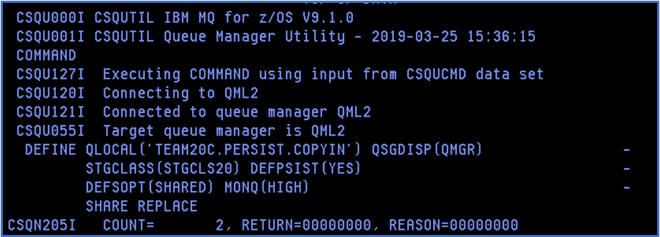
-
Open MQ Explorer. If you do not yet see queue managers such as
QML1orQML2, use the appendix at the end of this lab to add them. -
Browse the messages on the queue. Right-click the queue name and select Browse Messages.
-
Right-click the message and select Properties. This should open a panel like the following:
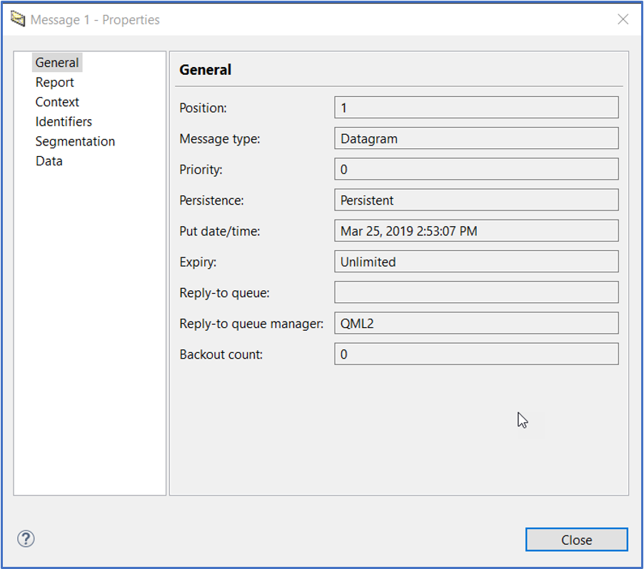
- Select the Identifiers tab and view the message ID.

- Scroll to the right to display the remaining message identifier bytes.
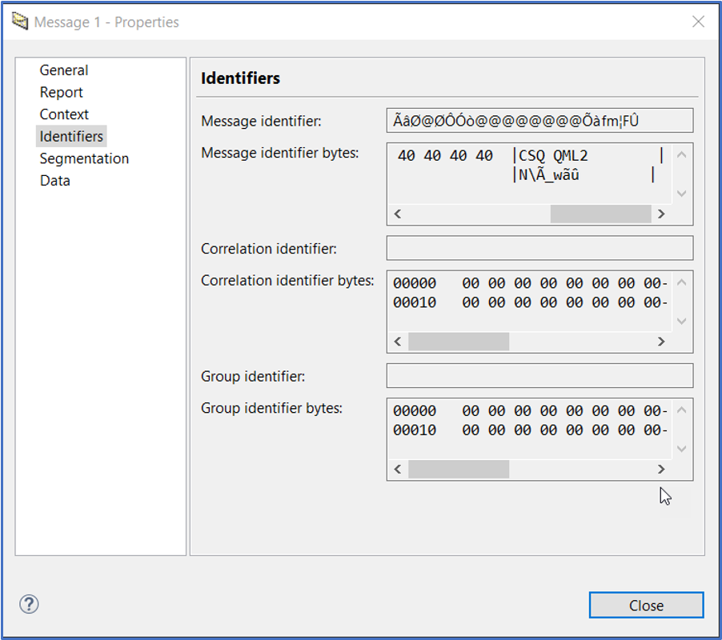
- Close the panel.
III. Get the message from the queue
-
Return to the JCL PDS and select the
LOGGETmember. Make the same++...++substitutions you used forLOGPUT. -
Save and submit the
LOGGETjob. -
Note that this step may take slightly more than one minute to complete because it defaults to a wait interval of 60 seconds. It is also expected to return reason code
2033.
Note: Reason code
2033meansMQRC_NO_MSG_AVAILABLE. In this lab, that is expected after the program successfully gets the single test message and then waits for another message that never arrives.
- Review the output in
SDSF.ST. TheSYSPRINToutput should look similar to the following example:
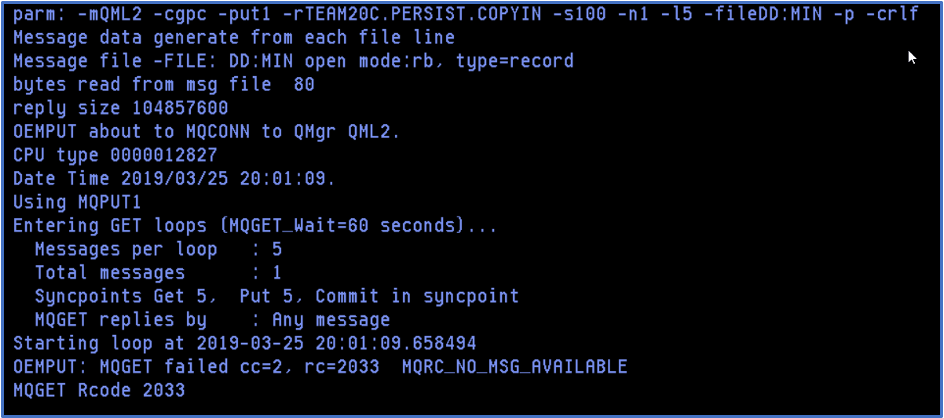
-
Confirm that the total number of messages retrieved is
1. Return to MQ Explorer and verify that the current queue depth is now0. -
At this point, you have successfully put and gotten a persistent message.
IV. Identify the page set and active log
-
Return to the JCL PDS and select the
LOGEXTR1member. This job runsCSQ1LOGP. -
Make the global changes to the
++...++variables, but do not update++PAGESET++or++LOGNAME++until you have identified the correct values. -
To determine the page set number:
a. In MQ Explorer, display the storage classes. It should look similar to the following:
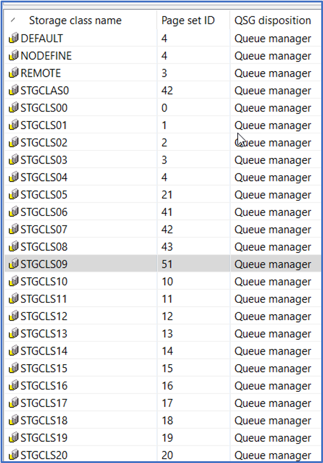
b. Match the name of the storage class used by your queue to the page set ID. In the example shown in the original lab, the page set associated with STGCLS09 is 51.
c. Replace all instances of ++PAGESET++ with the page set ID you identified.
- To determine the name of the active log data set, navigate to
SDSF.DAand set the prefix so that you can display the queue manager and channel initiator address spaces. For example:
PREFIX QML*
The output should look similar to the following example:
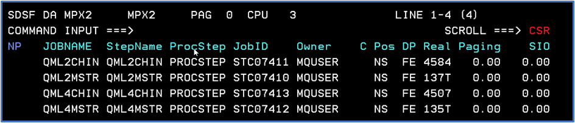
- Expand the MSTR output for your queue manager and select the
JESMSGLGoutput. The results should look similar to the following:
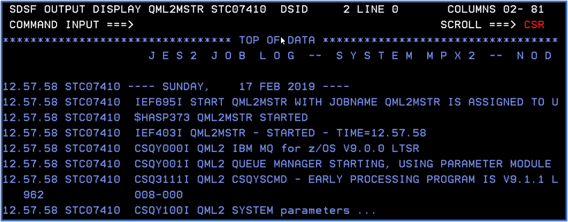
-
Navigate to the bottom of the output by using the
BOTcommand. -
Enter the command to display the log status, replacing the command prefix with your queue manager name if needed:
+cpf DISPLAY LOG
- At the end of the display log report, identify the current active log. An example is shown below:
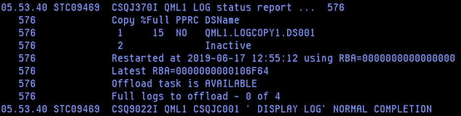
- Use the last node of the current log name to replace the
++LOGNAME++variable. In the example shown, that value isDS001.
Note: In a busy environment, active log datasets can switch over time. If too much time passes between the put step and the extraction step, verify that you are still selecting the correct active log for the message you wrote.
V. Extract the log records
-
Replace all instances of
++LOGNAME++with the value you identified. Save and submit theLOGEXTR1job. -
This job extracts updates made to the selected page set. In a production environment, that could include updates for many messages and many queues, not just the one used in this lab.
-
The IBM documentation for
CSQ1LOGPshould be referenced using the current IBM Docs site for your MQ version. -
The beginning of the output should look similar to the following:
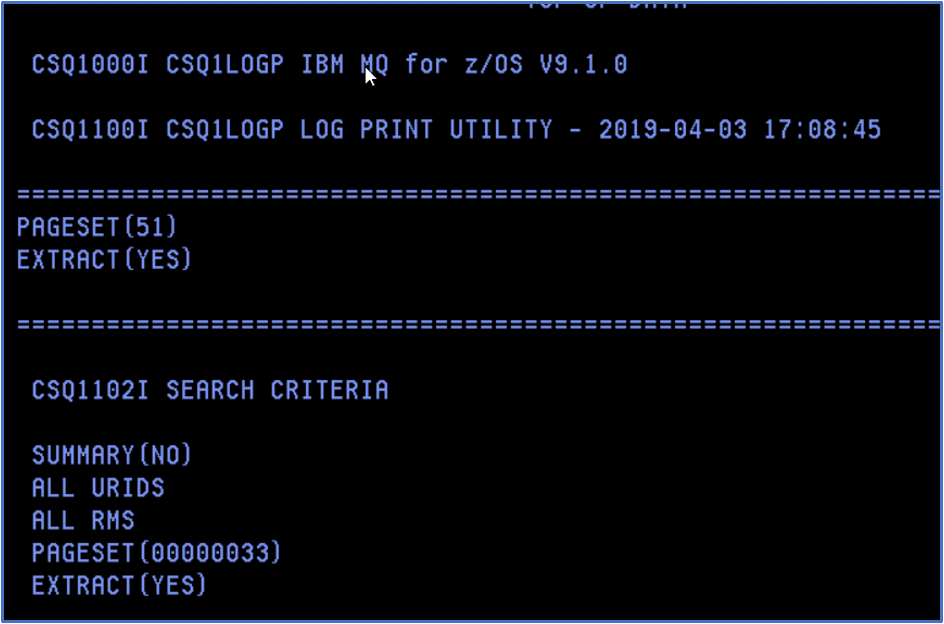
Note: In the SEARCH CRITERIA section, the page set is displayed in hexadecimal.
- Scroll through the output and confirm that you can see the message data, similar to the following example:
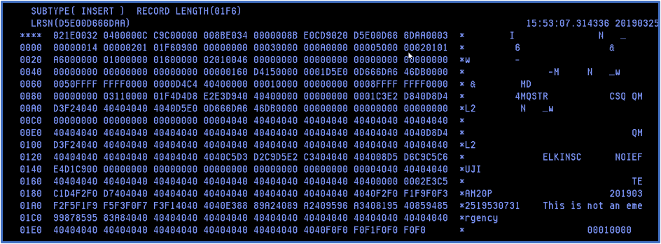
VI. Replay the message
-
Return to the JCL PDS and select the
LOGJmember. This executes the sample programCSQ4LOGSto replay the message or messages from the file created by the log extraction process. -
Replace the
++...++variables in the same way as in the earlier jobs. Save and submit the job. -
Review the
SYSPRINToutput. It should describe the replay actions taken and should look similar to the following:
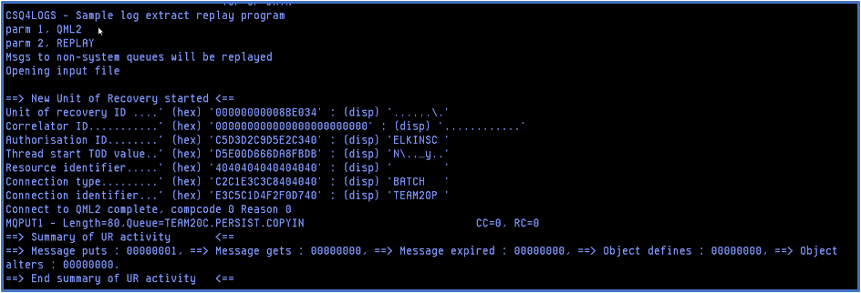
-
Return to MQ Explorer and verify that the queue depth is back to
1. -
Browse the queue and confirm that the message has been restored.
-
Congratulations. You have successfully restored a persistent message to a queue from the log.
Validation checklist
Before considering the lab complete, verify the following:
- The queue definition job completed successfully and the queues were actually created
LOGPUTsuccessfully put one persistent message- MQ Explorer showed the message and its message ID
LOGGETremoved the message and the queue depth became0- The correct page set was identified for the queue
- The correct active log dataset was identified
CSQ1LOGPoutput included the message dataCSQ4LOGSreplayed the extracted message successfully- The queue depth returned to
1after replay
Troubleshooting
If the lab does not behave as expected, check the following:
- The
DEFQLOGjob really created the queues, even if the job return code was zero - The
LOGPUTjob used persistence and wrote the message to the expected queue - The
LOGGETjob was run against the same queue manager and queue - The selected storage class maps to the correct page set
- The selected active log dataset is the one that contained the put operation
- Too much time did not pass between the put and extract steps, causing the relevant log records to move outside the expected active log
CSQ1LOGPsearch criteria match the actual page set used by the queue- MQ Explorer is connected to the correct queue manager
- The replay job completed successfully and wrote back to the expected queue
Common symptoms and causes:
- Queue depth is still
1afterLOGGET: the get job did not remove the message LOGGETreturns2033immediately and no message was removed: the put job failed or the wrong queue was usedCSQ1LOGPoutput does not show the message: wrong page set or wrong active log selectedCSQ4LOGSruns but the queue remains empty: the extract file did not contain the target message or the replay criteria were wrong- MQ Explorer does not show
QML1orQML2: the queue managers have not yet been added to MQ Explorer
Cleanup
If you want to clean up after the lab, delete the queues created by DEFQLOG using your normal MQ administration method, and confirm that the queue depths return to zero or that the objects are removed entirely.
If your workshop environment provides cleanup JCL, use that instead of deleting the queues manually.
Appendix: Adding queue managers to MQ Explorer
- Right-click the Queue Managers folder and select Add Remote Queue Manager.
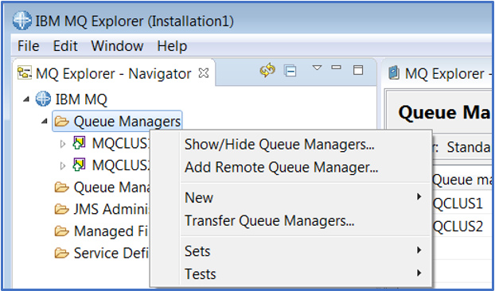
- Enter
QML1and select Connect directly. Then click Next.
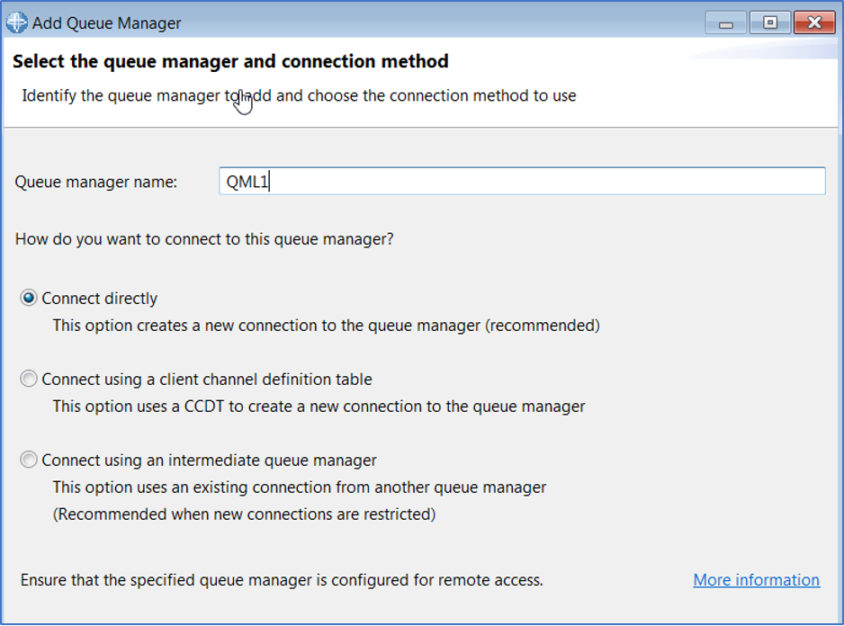
- Enter
mpx1for the host name or IP address and1417as the port number. Then click Finish.
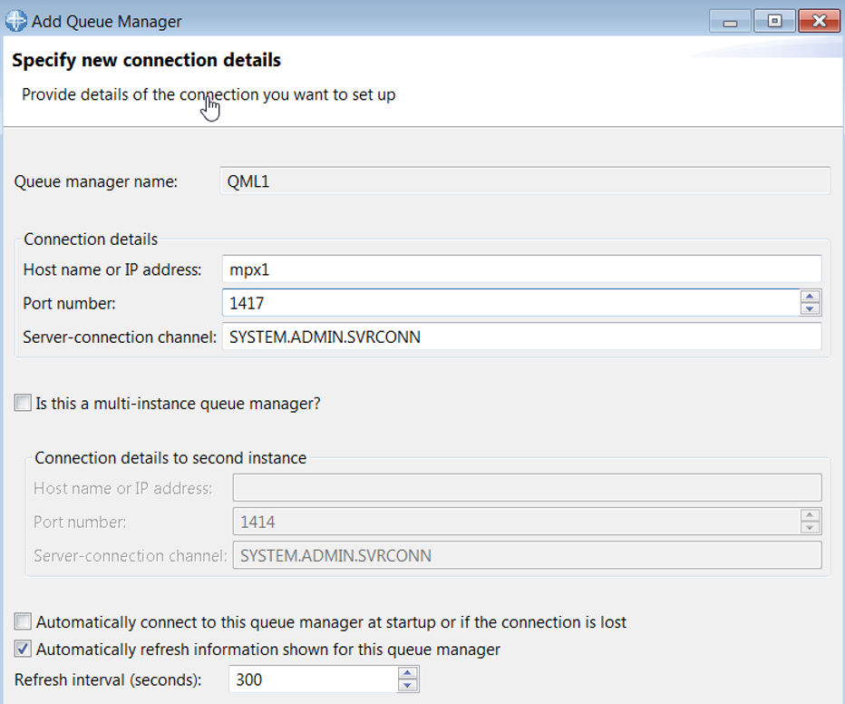
-
Repeat the steps for
QML2, usingmpx2as the host name and1418as the port. -
The queue manager list should now include both z/OS queue managers used for this lab.